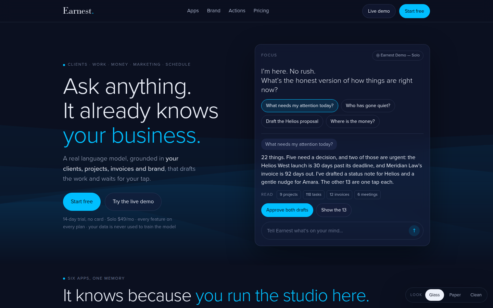
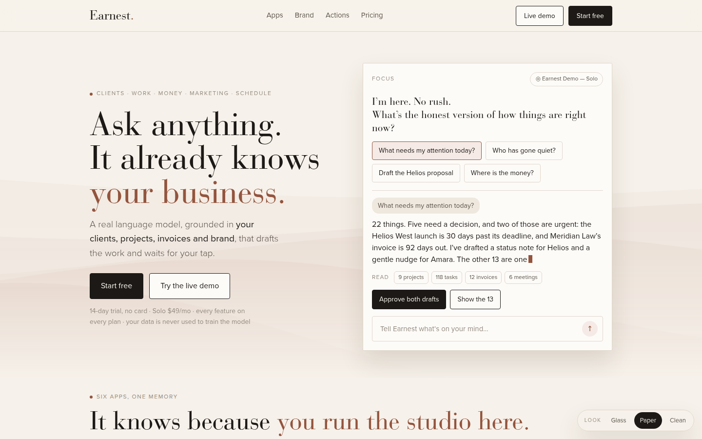
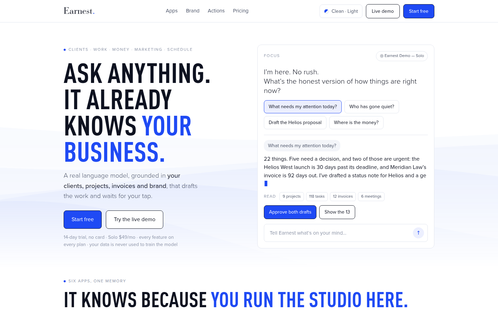

A · It already knows
LLM-first. The Focus demo, the Context Broker diagram, brand as cause and effect, AI Actions with a held item.
Glass · kept: hero, brand, actions, FAQ
Concept A’s thesis (the model, grounded in the studio) with Concept B’s breadth (the six-app switcher), in about half the words, in each of the app’s three looks. A Theme control in the nav sets Look (Glass, Paper, Clean) and Mode (Light, Dark), the same two axes as inside the app. Each thumbnail below opens the page already in that look.



data-look and data-mode on the root, which is how the app itself does it. Six combinations, nothing duplicated.#glass, #paper and #clean open a look in its default mode; #paper-dark and the like set both. The choice is remembered per browser.| Claim | Where the combined page proves it |
|---|---|
| The organization LLM | Focus demo in the hero with the “Read” strip; the Earnest chip on every switcher tab; the ChatGPT answer in the FAQ |
| Brand awareness | Brand section: profile card, then a proposal, a post and a reminder in that voice; the Organization tab |
| Execution | Six-app switcher; the replace strip; AI Actions diff across Work, Money, Marketing and People; Decide · Do · Know |
| The guardrail | Hero fine print; the held email in the AI Actions diff; the “will it send on its own” answer |
LLM-first. The Focus demo, the Context Broker diagram, brand as cause and effect, AI Actions with a held item.
Glass · kept: hero, brand, actions, FAQ
Breadth-first. The six-app switcher, the replace strip, an execution bento, the capacity ladder.
Clean · kept: switcher, replace strip, pricing ladder
Outcome-first. Eight stops through one Tuesday, Earnest / You at each, then the tally.
Paper · not combined; suited to the blog, launch email and sales deck
Every screenshot is from the 1 September 2026 capture of the demo workspaces. The latest/ folder still carries July captures of screens the September pass did not cover (calendar, organization brand settings, proposal preview, People overview, Money cash flow); those are not used. Copy uses the demo’s clients (Helios, Pinecrest Clinic, Meridian Law, Atlas Fintech) and its numbers.